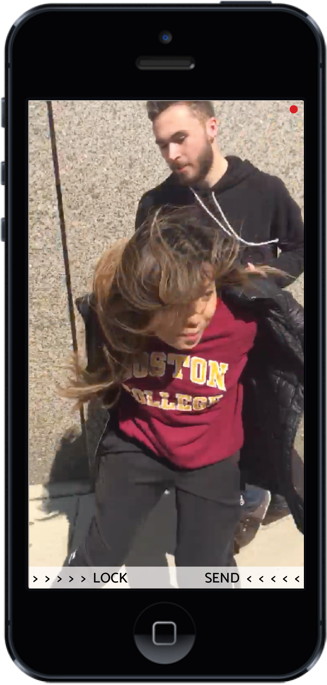

TUSK
An app that insures your video evidence of crimes or police brutality is safe and secure no matter what happens to your phone. An elephant never forgets anything.
The need for the app came about because of the ever rising need for video evidence of racism, police brutality, and hate crimes happening across the country right now. With the current political climate there are many issues arising with how people are being treated who differ in sexuality, religion, or nationality. The app aims to assist in apprehending people who are committing crimes.
DEFENSE
Defend your evidence with your tusks. Charge forwards for justice with confidence that nothing will happen to your evidence you record. Someone takes your phone? No worries. Someone tries to force you to delete the video? No worries. It will all be preserved on your online account for you to access whenever needed.

Perks
- Easy to use app that allows you to record evidence to submit to the authorities.
- Seek medical help immediately within the app.
- Access your video at any time anywhere to be able to submit your evidence.
- Easy to change settings to access the app quicker
HERD
The app syncs to your account on an online server. When the app opens the it immediately starts to record straight from your phone camera. Anytime during your recording session you can swipe right to lock the app. During this locked stage the app will continue to upload and sync the video your are taking to your online account.
This does a few things:
- Keeps your videos safe no matter what happens to your phone.
- The phone locks and needs a drawn symbol to be unlocked.
If you need medical help when your are recording a situation you can swipe left to open the help page. The page will allow you to request medical assistance. The authorities will then send medical help to your location that is sent to them from your phone. You can also quickly show the danger level of the situation so that authorities will know what they are getting into upon arrival.
How It Works
- Draw your preset image on the drawing pad.
- Hit the remember button to unlock the phone.
- The app will still upload the video to your online account while it is locked.